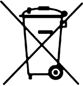

Informations sur la sécurité et la réglementation : g.co/pixel/safety ou Paramètres
Où trouver des informations sur le produit
Ce guide comprend les mêmes consignes de sécurité de base que dans le livret imprimé "Sécurité et garantie" fourni avec le Pixel 6 et le Pixel 6 Pro. Il contient également d'autres informations sur la sécurité, la réglementation et la garantie de ces produits.
Informations sur la sécurité et la réglementation : g.co/pixel/safety ou Paramètres  À propos du téléphone
À propos du téléphone  Manuel de sécurité et réglementation.
Manuel de sécurité et réglementation.
Conditions de garantie applicables à votre pays d'achat et instructions pour déposer une réclamation : g.co/pixel/warranty.
Libellés électroniques réglementaires et débit d'absorption spécifique (DAS) de votre appareil : Paramètres  À propos du téléphone
À propos du téléphone  Libellés réglementaires.
Libellés réglementaires.
Aide complète en ligne : g.co/pixel/help.
 |
AVERTISSEMENT : INFORMATIONS SUR LA SANTÉ ET LA SÉCURITÉ À LIRE AVANT TOUTE UTILISATION POUR RÉDUIRE LES RISQUES DE BLESSURES CORPORELLES, D'INCONFORT, DE DOMMAGES MATÉRIELS (Y COMPRIS SUR LES ACCESSOIRES DU PIXEL 6 ET DU PIXEL 6 PRO OU TOUT APPAREIL CONNECTÉ) ET AUTRES RISQUES POTENTIELS. |
Manipulez votre téléphone avec précaution. Vous risquez d'endommager le téléphone ou la batterie si vous le démontez, le laissez tomber, le pliez, le brûlez, l'écrasez ou le perforez. N'utilisez pas le téléphone si son boîtier est endommagé, si son écran est fissuré ou s'il comporte toute autre forme de dommage physique. L'utilisation d'un téléphone endommagé peut provoquer une surchauffe ou des blessures. N'exposez pas le téléphone à des liquides pour éviter tout risque de court-circuit ou de surchauffe. S'il est mouillé, n'essayez pas de le sécher à l'aide d'une source de chaleur externe.
Votre téléphone est conçu pour fonctionner de manière optimale à une température ambiante comprise entre 0 et 35 °C. Il doit être stocké à une température ambiante comprise entre -20 et 45 °C. Ne laissez pas votre téléphone dans des lieux où la température peut dépasser 45 °C, tels que le tableau de bord d'une voiture ou près d'une bouche de chauffage, car cela pourrait endommager le produit, provoquer une surchauffe de la batterie ou présenter un risque d'incendie. Éloignez le téléphone des sources de chaleur et des rayons directs du soleil. Si l'appareil devient trop chaud, débranchez-le de sa source d'alimentation (s'il est branché), placez-le à un autre endroit plus frais et attendez qu'il refroidisse avant de l'utiliser. Votre téléphone est conçu pour fonctionner à une altitude maximale de 5 000 mètres.
Dans certains modes (jeu, réalisation de vidéos, lampe torche, ou fonctionnalités de réalité augmentée ou de réalité virtuelle), votre téléphone peut générer davantage de chaleur que ce qu'il produit dans des conditions normales de fonctionnement. Il peut alors basculer en mode d'économie d'énergie ou s'éteindre provisoirement. Faites particulièrement attention lorsque vous vous servez de l'appareil avec ces modes. Pour en savoir plus sur les risques associés, reportez-vous à la section "Exposition prolongée à la chaleur" ci-dessous.
N'essayez pas de réparer votre téléphone vous-même. Son démontage peut entraîner une perte de la résistance à l'eau, ou causer des blessures ou des dommages.
Par exemple, l'appareil contient un laser qui peut être endommagé pendant le démontage et vous exposer à des émissions laser invisibles et dangereuses.
Contactez le service client si l'appareil ne fonctionne pas correctement ou s'il a été endommagé. Pour plus d'informations, consultez la page g.co/pixel/contact.
Assurez-vous que l'adaptateur secteur et le téléphone sont placés dans un endroit bien ventilé lorsqu'ils sont en cours d'utilisation ou en charge. L'utilisation de câbles ou d'adaptateurs secteur endommagés, ou la charge en présence d'humidité peuvent provoquer un incendie, un choc électrique ou des blessures, endommager votre téléphone et entraîner d'autres dégâts matériels. Ne rechargez pas votre téléphone lorsqu'il est mouillé. Évitez de recharger l'appareil en plein soleil.
Lorsque l'appareil est en charge, assurez-vous que l'adaptateur secteur est branché sur une prise à proximité et facilement accessible. Ne forcez pas l'insertion de cet adaptateur secteur avec d'autres prises ou adaptateurs dans une prise secteur, si l'espace est insuffisant pour les accueillir côte à côte. Lorsque vous débranchez l'adaptateur secteur de la prise, tirez sur l'adaptateur et non sur le câble de recharge. Veillez à ne pas tordre ni pincer le cordon, et ne forcez pas l'insertion d'un connecteur dans un port. Si vous recevez, pendant la recharge du téléphone, un message vous indiquant de débrancher l'appareil en charge ou l'adaptateur secteur, déconnectez l'appareil en charge ou l'adaptateur secteur. Avant d'essayer de charger à nouveau votre téléphone, veillez à ce que le connecteur du câble de recharge et le port de recharge du téléphone soient tous deux secs et que rien ne les obstrue.
Ne chargez votre téléphone qu'avec le câble inclus ou des accessoires de recharge compatibles disponibles sur le Google Store et chez les revendeurs Google autorisés (repérez le logo "Made for" de Google). L'adaptateur secteur doit être certifié comme présentant une sortie avec une source d'alimentation à puissance limitée, conformément à la norme CEI 60950-1, et/ou classée PS2, conformément à la norme CEI 62368-1 (5 V CC et 3 A au maximum, 9 V CC et 3 A au maximum en cas d'utilisation avec un adaptateur secteur compatible USB PD et jusqu'à 11 volts CC et 3 A maximum pour un adaptateur secteur compatible USB PD 3.0) et qui satisfait les exigences de certification CTIA pour la conformité des batteries avec la norme IEEE 1725. L'utilisation d'accessoires de charge non compatibles peut provoquer un incendie, un choc électrique et des blessures, ou endommager l'appareil et les accessoires.
Votre téléphone peut être rechargé avec tout chargeur sans fil compatible Qi ou approuvé par Google. Ne placez pas d'objets métalliques ou magnétiques entre le chargeur sans fil et le téléphone. Ils risqueraient de chauffer, ou votre appareil pourrait ne pas se charger correctement. Exemples d'objets : pièces, bijoux, outils pour tiroir de carte SIM ou cartes de crédit. Si la coque de votre téléphone est métallique ou magnétique, retirez-la avant de procéder à la recharge sans fil, sans quoi l'appareil et le chargeur risquent de surchauffer, et votre téléphone pourrait ne pas se charger correctement.
Le téléphone et son chargeur génèrent de la chaleur en fonctionnement normal, et respectent les normes et les limites relatives à la température de surface. Évitez tout contact prolongé avec la peau lorsque l'appareil est en charge ou utilisé. En effet, toute exposition de la peau à des surfaces brûlantes pendant une longue période peut entraîner inconfort ou brûlures. Ne dormez pas sur ou avec votre appareil ou son adaptateur secteur, et ne les couvrez pas avec une couverture ou un oreiller. Gardez cela à l'esprit si vous souffrez d'une pathologie qui affecte votre sensibilité thermique cutanée.
Cet appareil n'est pas un jouet. Il peut contenir (ou peut être fourni avec) des petites pièces, des éléments en plastique, en verre ou en métal, ainsi que des pièces à bords tranchants susceptibles de causer une blessure ou de présenter un risque d'étouffement. Les enfants peuvent s'étrangler avec les câbles. Rangez les cordons et câbles du téléphone hors de portée des enfants (à plus d'un mètre de distance), et ne les autorisez pas à jouer avec le téléphone et ses accessoires. Ils pourraient se faire mal, blesser d'autres personnes ou encore endommager accidentellement le téléphone. En cas d'ingestion de petites pièces, consultez immédiatement un médecin.
 |
Une exposition prolongée à des sons forts (y compris la musique) peut provoquer une perte auditive. Pour prévenir d'éventuelles lésions auditives, évitez toute écoute prolongée à un volume élevé. Si vous êtes exposé de manière continue à des bruits ambiants importants et à des volumes élevés, ceux-ci pourront vous paraître moins forts qu'ils ne le sont réellement. Vérifiez le volume avant d'utiliser des écouteurs ou un casque. |
Cet appareil contient une batterie rechargeable au lithium-ion qui est un composant sensible, susceptible d'occasionner des blessures s'il est endommagé. Ne tentez pas de la retirer vous-même. Pour procéder à son remplacement, contactez Google ou un fournisseur de services agréé par Google. Pour plus d'informations, consultez la page g.co/pixel/contact. Ne confiez pas le remplacement de la batterie à des professionnels non qualifiés, car ils risqueraient d'endommager votre appareil. Le remplacement ou l'utilisation de batteries non conformes peut présenter un risque d'incendie, d'explosion, de fuite ou autres. Ne modifiez pas la batterie et ne la reconstruisez/reconditionnez pas. Ne tentez en aucun cas de la percer, d'y insérer des objets, de l'immerger ni de la mettre en contact avec de l'eau ou d'autres liquides. Ne l'exposez pas à une flamme, à une chaleur excessive ni à d'autres dangers.
Ne court-circuitez pas la batterie, et évitez tout contact d'objets métalliques ou conducteurs avec ses bornes. Évitez de laisser tomber votre téléphone ou sa batterie. En cas de chute, en particulier sur une surface dure, et si vous suspectez ou constatez des dommages, contactez Google ou un fournisseur de services agréé par Google pour en demander l'examen. En cas de fuite de la batterie, évitez tout contact du liquide avec vos yeux, votre peau ou vos vêtements. En cas de contact avec les yeux, ne les frottez pas. Rincez-les immédiatement à l'eau claire, puis consultez un médecin.
Ce téléphone contient une batterie rechargeable au lithium-ion conforme à la norme IEEE 1725 et aux autres normes en vigueur.
Lors de la mise au rebut et du transport de votre appel, des batteries et des accessoires, respectez les réglementations locales en matière d’environnement et de transport. Transportez-les comme il se doit et ne les jetez pas avec les ordures ménagères. Si vous ne respectez pas ces prescriptions, ces éléments matériels risquent d'exploser, de causer un incendie et/ou de créer d'autres dangers. Vous ne devez en aucun cas les ouvrir, les écraser ou les brûler, ni les exposer à des températures supérieures à 45 °C. Pour plus d'informations sur le recyclage de votre appareil, des batteries et des accessoires, consultez la page g.co/pixel/recycle.
Pour éviter d'endommager les pièces de votre téléphone ou ses circuits internes, veillez à ne pas utiliser ni stocker l'appareil ou ses accessoires dans des environnements poussiéreux, enfumés, humides ou sales, ou à proximité de champs magnétiques. Éloignez l'appareil des sources de chaleur et des rayons directs du soleil. Ne laissez pas votre téléphone à l'intérieur d'un véhicule ou dans des lieux où la température peut dépasser 45 °C, tels que le tableau de bord d'une voiture, le rebord d'une fenêtre, près d'une bouche de chauffage ou derrière du verre exposé à la lumière directe du soleil ou à une forte lumière ultraviolette pendant de longues périodes. Cela peut endommager le téléphone, provoquer la surchauffe de la batterie ou présenter un risque d'incendie ou d'explosion.
Veillez à ne pas charger, utiliser, stocker ni transporter votre téléphone dans des endroits où des produits inflammables ou explosifs sont entreposés (comme des stations-service, des dépôts de carburant ou des usines chimiques). N'utilisez pas votre appareil sans fil lorsque des opérations de dynamitage sont en cours ou dans des atmosphères potentiellement explosives, par exemple dans des zones de transfert ou de stockage de produits chimiques ou de carburant, ou des zones où l'air a une forte teneur en produits chimiques, vapeurs ou particules inflammables (céréales, poussières ou poudres métalliques, par exemple). Des étincelles dans de tels endroits pourraient provoquer une explosion ou un incendie donnant lieu à des blessures corporelles graves, voire mortelles. Observez toutes les consignes et les panneaux affichés dans des lieux où ces risques peuvent exister.
Votre téléphone peut accéder à des services de cartographie et de navigation. Les plans et la navigation nécessitent une connexion de données opérationnelle et l'activation des services de localisation, et sont susceptibles de ne pas être disponibles de façon continue ou dans toutes les régions. Les plans et les itinéraires peuvent être inexacts et les conditions réelles peuvent être différentes de ce qu'indiquent la carte, les données, les infos relatives à la circulation, les itinéraires, et autres contenus et résultats. Vérifiez attentivement les itinéraires et respectez le Code de la route, ainsi que les panneaux de signalisation. Vous devez faire preuve de discernement et de bon sens, et avoir conscience des risques que vous prenez en utilisant ces services de cartographie et de navigation. Vous êtes responsable de votre conduite et de ses conséquences en toutes circonstances. La fonction de navigation en réalité augmentée nécessite les dernières mises à jour Google Street View ainsi que de bonnes conditions d'éclairage. Elle n'est pas disponible en Inde.
L'utilisation de votre appareil pendant que vous effectuez certaines activités peut perturber votre concentration et vous mettre, vous et d'autres personnes, en danger. Pour réduire le risque d'accident (et parce que la loi l'interdit dans la plupart des pays), n'utilisez pas votre appareil lorsque vous conduisez un véhicule ou un vélo, lorsque vous utilisez une machine ou lorsque vous pratiquez d'autres activités à risque. Suivez la réglementation locale sur l'utilisation des appareils mobiles, des casques audio et des casques de protection.
Cet appareil a été évalué et répond aux exigences réglementaires applicables en matière d'exposition aux ondes radio. Il a été conçu et fabriqué de façon à ne pas excéder les limites d'émission applicables en matière d'exposition aux radiofréquences (RF).
Dans les pays où la limite du débit d'absorption spécifique (DAS) est de 1,6 W/kg en moyenne sur un gramme de tissu du corps, les valeurs de DAS les plus élevées pour ce type d'appareil sont de 1,19 W/kg pour le Pixel 6 (G9S9B), 1,20 W/kg pour le Pixel 6 (GB7N6/GR1YH) et 1,11 W/kg pour le Pixel 6 Pro lorsqu'il est utilisé directement contre l'oreille, et 1,20 W/kg pour le Pixel 6 (G9S9B), ou 1,20 W/kg pour le Pixel 6 (GB7N6/GR1YH) et 1,19 W/kg pour le Pixel 6 Pro lorsqu'il est utilisé à 1 cm du corps. Dans les pays où la limite du débit d'absorption spécifique (DAS) est de 2,0 W/kg en moyenne sur 10 grammes de tissu du corps, les valeurs de DAS les plus élevées pour ce type d'appareil sont de 1,00 W/kg pour le Pixel 6 (GB7N6/GR1YH) et de 0,99 W/kg pour le Pixel 6 Pro lorsqu'il est utilisé directement contre l'oreille, et de 1,38 W/kg pour le Pixel 6 et 1,40 W/kg pour le Pixel 6 Pro à une distance de 0,5 centimètre du corps.
Vous trouverez les valeurs de DAS applicables à chacune de ces juridictions sur votre appareil : Paramètres  À propos du téléphone
À propos du téléphone  Libellés réglementaires.
Libellés réglementaires.
Pour réduire l'exposition aux radiofréquences, utilisez une option mains libres, comme le haut-parleur intégré, le casque fourni ou tout autre accessoire similaire. Assurez-vous que les accessoires de l'appareil, tels que sa coque ou son étui, sont exempts de composants métalliques. Éloignez suffisamment l'appareil de votre corps pour respecter les distances minimales de sécurité.
Pour en savoir plus sur le DAS, consultez les pages ci-dessous :
fcc.gov
icnirp.org
ec.europa.eu
dot.gov.in
Observez les règles relatives à l'interdiction de la technologie sans fil (par exemple, cellulaire ou Wi-Fi). Sachez que, même si votre téléphone est conforme aux réglementations sur les émissions de radiofréquences, le fait d'utiliser un appareil sans fil peut affecter le fonctionnement d'autres équipements électroniques. Par exemple, en avion ou juste avant l'embarquement, respectez les instructions d'utilisation de votre appareil sans fil fournies par la compagnie aérienne. Utiliser un appareil sans fil dans un avion peut perturber les réseaux sans fil, compromettre le fonctionnement de l'avion ou être interdit par la loi. Il se peut cependant que vous soyez autorisé à utiliser votre appareil en mode Avion.
Les appareils sans fil ne sont pas toujours fiables pour les appels d'urgence. Cet appareil fonctionne à l'aide de signaux radio et n'est pas en mesure d'établir ni de maintenir une connexion en permanence. En outre, il est alimenté par une batterie rechargeable, dont le fonctionnement peut être affecté par la température, l'utilisation que vous en faites, des dommages et d'autres facteurs. Bien que, dans certaines juridictions, les informations d'urgence soient transmises via des réseaux sans fil, il se peut que votre appareil ne reçoive pas toujours ces communications, selon la connectivité réseau ou d'autres facteurs. Certaines fonctionnalités et certaines informations ou communications d'urgence peuvent ne pas être accessibles dans toutes les régions ni dans toutes les langues.
Votre téléphone contient des aimants, et utilise des signaux radio et d'autres composants qui génèrent des champs électromagnétiques. Ces aimants et ces champs électromagnétiques peuvent interférer avec les dispositifs médicaux, tels que les pacemakers et d'autres implants médicaux. Assurez toujours une distance suffisante entre le téléphone et le dispositif médical. Si vous avez des questions sur l'utilisation de votre Pixel avec un dispositif médical, consultez un professionnel de santé avant toute utilisation de votre téléphone. Si vous pensez que celui-ci interfère avec votre dispositif médical, éteignez-le et consultez votre médecin pour obtenir des informations spécifiques à votre dispositif médical.
Éteignez votre appareil sans fil lorsque le personnel des hôpitaux, des cliniques ou d'autres établissements de santé vous le demande. Cette démarche vise à éviter d'éventuelles interférences avec les appareils médicaux sensibles.
Votre téléphone n'est pas un appareil médical, et les fonctionnalités de ses éventuelles applications de santé ont une visée purement informative. Votre téléphone et ces applications ne sont pas conçus pour être utilisés dans le cadre du diagnostic ni du traitement d'une maladie ou d'un autre trouble, ni pour contrôler, atténuer ou prévenir une maladie ou d'autres troubles.
Certaines personnes peuvent souffrir de réactions cutanées liées à un contact prolongé avec les matériaux utilisés, comme le nickel ou le latex, dans les accessoires portés. Ces réactions peuvent être dues, entre autres, à des allergies ou à la présence de substances irritantes (savons, sueur, par exemple). Veillez à ce que votre téléphone reste propre et sec. Si vous constatez une irritation cutanée, cessez d'utiliser le téléphone et consultez un médecin.
Un faible pourcentage d'utilisateurs peut être victime de maux de tête, de crises d'épilepsie, de pertes de connaissance, de fatigue oculaire, de fatigue ou de sécheresse oculaire déclenchés par un stimulus visuel, par exemple des lumières clignotantes, des motifs aux couleurs vives ou des appareils électroniques dotés d'un écran. Ces symptômes peuvent toucher des personnes n'ayant jamais connu de tels problèmes auparavant. Si vous avez déjà été victime de crises d'épilepsie, de pertes de connaissance ou de malaises, ou avez déjà connu des problèmes de santé ou subi un inconfort, que vous croyez susceptibles d'être influencés par votre téléphone, consultez un médecin avant toute utilisation de votre appareil. Cessez immédiatement d'utiliser votre téléphone et consultez un médecin si vous éprouvez des symptômes que vous croyez pouvoir être causés ou influencés par votre téléphone (par exemple, des maux de tête, des pertes de connaissance ou des crises d'épilepsie).
Certaines actions répétitives, telles que la saisie sur clavier et les gestes d'appui et de balayage sur l'écran de votre téléphone, peuvent causer une gêne aux doigts, aux mains, aux poignets, aux bras, aux épaules ou à d'autres parties du corps. Si vous constatez ce type de gêne, arrêtez d'utiliser votre téléphone et consultez un médecin.
 |
Attention : Votre téléphone contient un module laser de classe 1. La conception de ce produit intègre un dispositif optique et un boîtier de protection pour éviter toute exposition à un niveau de rayonnement laser supérieur à la classe 1. |
Les modules laser de ce produit sont conformes aux normes 21 CFR 1040.10 et 1040.11, hormis dans les cas prévus par la norme CEI 60825-1 éd. 3, comme indiqué dans le document "Laser Notice No 56" du 8 mai 2019. L'utilisation de commandes, de réglages ou de procédures autres que ceux indiqués dans le présent document peut vous exposer à des rayonnements nocifs. Ce produit doit être réparé par Google ou par un fournisseur de services agréé.
Module laser pour la mise au point automatique : fabriqué en Chine. STMicroelectronics, 12 rue Jules Horowitz, 38019 Grenoble, France.
Module laser de proximité : fabriqué en Autriche. ams AG, Tobelbader Str. 30, 8141 Oberpremstätten, Autriche.
Suivez ces consignes lors de l'utilisation, de l'entreposage ou du nettoyage du téléphone :
Veillez à ne pas utiliser ni recharger le téléphone à des températures ambiantes inférieures à 0 °C ou supérieures à 35 °C. Si l'appareil atteint une température interne située en dehors de la plage des températures normales d'utilisation, il va tenter de la réguler, avec les conséquences possibles suivantes : performances et connectivité réduites, recharge impossible ou extinction de l'appareil. Il se peut que vous ne puissiez pas utiliser l'appareil tant qu'il n'a pas réajusté sa température. Déplacez-le vers un endroit plus frais (ou plus chaud) et attendez quelques minutes avant d'essayer de l'utiliser à nouveau.
Débranchez le téléphone et l'adaptateur secteur avant de les nettoyer, en cas d'orage ou lorsque vous ne les utilisez pas pendant une longue période. Ne nettoyez pas votre téléphone pendant qu'il est en charge. Cela pourrait provoquer des blessures ou endommager votre appareil. Évitez d'utiliser un solvant ou un produit abrasif qui risquent d'endommager la surface du produit. N'utilisez pas de détergent chimique, de poudre ni d'autres agents chimiques (comme le benzène) pour nettoyer le téléphone ou ses accessoires.
L'exposition à des produits de maquillage, des substances chimiques ou des tissus teints, comme le jean, peut tacher le Pixel 6 et les étuis de couleur claire.
Pour nettoyer votre téléphone, nous vous recommandons de l'essuyer délicatement avec un chiffon doux non pelucheux. Utilisez un chiffon sec pour les traces, les taches ou la poussière, et un chiffon légèrement humide (mais pas mouillé) pour les taches de couleur telles qu'une trace de maquillage ou un pantalon qui a déteint. Si l'écran est taché ou sale, utilisez des produits nettoyants pour lunettes ou des lingettes pour écran. Pour nettoyer l'arrière de l'appareil ainsi que ses côtés, utilisez un savon ménager ordinaire ou des lingettes nettoyantes sans javel. Pour plus d'instructions sur le nettoyage et l'entretien, consultez la page g.co/pixel/care.
Pour désinfecter votre Pixel 6, y compris votre écran, vous pouvez utiliser des lingettes désinfectantes ménagères ordinaires ou à base d'alcool isopropylique à 70 %. N'utilisez pas de lingettes imprégnées d'eau de Javel.
Votre téléphone résiste à l'eau conformément à la norme IP68, mais n'est pas étanche. La résistance à l'eau n'est pas permanente. Elle peut être compromise par l'usure normale, ou si l'appareil a été réparé, démonté ou endommagé. N'exposez pas le téléphone à des liquides pour éviter tout risque de court-circuit ou de surchauffe. Le chargeur de l'appareil et les autres accessoires ne sont pas résistants à l'eau. Ils ne doivent donc pas être exposés à des liquides.
Évitez de placer des supports magnétiques ou sensibles aux champs magnétiques, comme des cartes de crédit, des cartes bancaires, des bandes audio/vidéo ou des appareils à mémoire magnétique, à proximité de ce téléphone ou du connecteur de son câble de recharge. Vous risqueriez de perdre les informations qui y sont stockées. Les objets sensibles aux champs magnétiques et contenant des informations doivent rester à une distance d'au moins 5 centimètres du téléphone.
Votre téléphone ne doit être réparé que par Google ou un fournisseur de services agréé par Google. Les réparations ou les modifications non autorisées peuvent endommager l'appareil de façon irréversible et avoir une incidence sur la couverture de la garantie et sur les autorisations réglementaires. Contactez le service client pour bénéficier d'une maintenance agréée. Pour accéder à l'aide et à l'assistance en ligne, consultez la page g.co/pixel/help. Si vous envoyez votre téléphone en réparation, il se peut que vous en receviez un de remplacement (à la place de votre téléphone d'origine). Si vous envoyez votre téléphone en réparation, il se peut que vous receviez un appareil de remplacement reconditionné (à la place de votre téléphone d'origine). Des pièces reconditionnées peuvent être utilisées pour réparer les produits. La réparation ou le remplacement peuvent entraîner une perte de données générées par l'utilisateur.
Vous trouverez des informations réglementaires, une certification et des marques de conformité spécifiques au Pixel 6 ou au Pixel 6 Pro sur votre appareil en accédant à Paramètres  À propos du téléphone
À propos du téléphone  Libellés réglementaires.
Libellés réglementaires.
Important : La conformité de cet appareil et des autres accessoires fournis dans la boîte avec les normes de compatibilité électromagnétique (CEM) a été démontrée dans des conditions qui incluent l'utilisation de périphériques conformes et de câbles blindés entre les composants du système. Il est important d'utiliser des périphériques conformes et des câbles blindés entre les composants du système afin de réduire la possibilité d'interférences avec les radios, les téléviseurs et d'autres appareils électroniques.
Remarque : Cet équipement a été testé et déclaré conforme aux limites pour un appareil numérique de classe B, conformément à l'article 15 de la réglementation de la FCC. Ces limites visent à assurer une protection raisonnable contre les interférences nocives dans une installation résidentielle. Cet équipement génère, utilise et peut émettre des radiofréquences, et, s'il n'est pas installé et utilisé conformément aux instructions, peut provoquer des interférences nuisibles avec les communications radio. Cependant, il ne peut être exclu que des interférences se produisent dans une installation donnée. Si cet équipement génère des interférences nuisant à la réception radio ou télévisuelle, ce qui peut être déterminé en mettant l'appareil hors tension, puis à nouveau sous tension, l'utilisateur est invité à corriger les interférences en appliquant une ou plusieurs des mesures suivantes :
Toute modification n'ayant pas été approuvée expressément par Google peut entraîner l'annulation du droit qui vous a été accordé d'utiliser l'équipement.
Cet appareil est conforme à l'article 15 de la réglementation de la FCC. Son fonctionnement est soumis aux deux conditions suivantes :
Numéro de modèle : G9S9B, GB7N6, G8V0U
Nom du produit : Pixel 6 et Pixel 6 Pro
Entité responsable :
Google LLC
1600 Amphitheatre Parkway
Mountain View, CA 94043, États-Unis
Contact : g.co/pixel/contact
Votre appareil a été évalué et certifié compatible avec les prothèses auditives conformément à la spécification technique ANSI C63.19. Il existe deux façons de mesurer la compatibilité avec les prothèses auditives :
Le Pixel 6 et le Pixel 6 Pro sont classés M4/T4, conformément à la réglementation de la FCC concernant la compatibilité des appareils sans fil avec les prothèses auditives.
Conformément à la réglementation de la FCC, un téléphone mobile est considéré comme compatible avec les prothèses auditives s'il est classé M3 ou M4 pour le couplage acoustique, ou T3 ou T4 pour le couplage inductif.
L'utilisation de certaines technologies sans fil de ces téléphones avec des prothèses auditives a été testée et validée. Cependant, ces téléphones peuvent contenir des technologies sans fil plus récentes, dont l'utilisation avec des prothèses auditives n'a pas encore été testée. Il est important de tester minutieusement les différentes fonctionnalités de ces téléphones à différents endroits, en utilisant votre prothèse auditive ou votre implant cochléaire pour déterminer si vous entendez des interférences. Consultez votre fournisseur de services ou Google pour obtenir des informations sur la compatibilité avec les prothèses auditives. Si vous avez des questions sur les modalités de retour ou d'échange, consultez votre fournisseur de services ou le revendeur du téléphone.
Cet appareil est conforme aux limites de la classe B de la norme ICES-003.
Le présent appareil est conforme aux CNR d'ISDE Canada applicables aux appareils radio exempts de licence. L'exploitation est autorisée aux deux conditions suivantes:
Les dispositifs fonctionnant dans la bande de 5 150 à 5 250 MHz sont réservés uniquement pour une utilisation à l’intérieur afin de réduire les risques de brouillage préjudiciable aux systèmes de satellites mobiles utilisant les mêmes canaux.
 |
Par la présente, Google LLC déclare que les équipements radioélectriques de type GB7N6 et GLU0G sont conformes à la réglementation sur les équipements radioélectriques de 2017. La déclaration de conformité complète est disponible à l'adresse suivante : g.co/pixel/conformity. |
Restrictions ou exigences de la réglementation de 2017 sur les équipements radioélectriques
Sur les bandes de fréquences comprises entre 5 150 et 5 350 MHz, et 5 925 et 6 425 MHz, l'appareil est exclusivement destiné à un usage en intérieur au Royaume-Uni.
Royaume-Uni
Les données indiquées ici correspondent à la puissance maximale des radiofréquences dans les bandes de fréquences sur lesquelles l'équipement radio fonctionne.
|
Fréquence |
Puissance Pixel 6 |
Puissance Pixel 6 Pro |
|
Wi-Fi : 2 400–2 483,5 MHz |
< 20 dBm |
< 20 dBm |
|
Wi-Fi : 5 150–5 350 MHz |
< 23 dBm |
< 23 dBm |
|
Wi-Fi : 5 470–5 725 MHz |
< 23 dBm |
< 23 dBm |
|
Wi-Fi : 5 745–5 825 MHz |
< 14 dBm |
< 14 dBm |
|
Wi-Fi : 5 925–6 425 MHz (VLP/LPI) |
< 14 dBm/< 23 dBm |
< 14 dBm/< 23 dBm |
|
Bluetooth : 2 400–2 483,5 MHz |
< 20 dBm |
< 20 dBm |
|
NFC : 13,56 MHz |
< -9 dBuA/m à 10 m |
< -7 dBuA/m à 10 m |
|
GSM 900 |
< 33,5 dBm |
< 34 dBm |
|
GSM 1800 |
< 31 dBm |
< 31 dBm |
|
UMTS : bandes I/VIII |
< 25 dBm |
< 25,5 dBm |
|
LTE : 1, 3, 7, 8, 20, 28, 38, 40, 42 |
< 25 dBm |
< 25,5 dBm |
|
LTE : 38 HPUE |
< 27 dBm |
< 27 dBm |
|
NR : n1, n3, n7, n8, n28, n38, n40, n77, n78 |
< 25 dBm |
< 25,5 dBm |
|
NR : n78 HPUE |
< 27 dBm |
< 27 dBm |
|
Transfert d'alimentation sans fil (110-148,5 kHz) |
< -18 dBuA/m à 10 m |
< -17 dBuA/m à 10 m |
|
UWB (6 489,6 MHz, 7 987,2 MHz) (Pixel 6 Pro) |
N/A |
< -4 dBm/50 MHz |
Google ne peut être tenu responsable en cas d'interférences avec la radio ou la télévision causées par une modification non autorisée des appareils ou des accessoires, ou par la substitution ou l'ajout de câbles de connexion et d'équipements différents de ceux préconisés par Google. Il appartient à l'utilisateur de corriger les interférences causées par des actions non autorisées de ce type. Google et ses revendeurs ou distributeurs autorisés ne sauraient être tenus responsables en cas de dommage ou d'infraction à la législation en vigueur dus au non-respect de ces consignes d'utilisation.
Ce produit est conforme à l'arrêté n° 3032 de 2012 "Réglementation sur la restriction de l'utilisation de certaines substances dangereuses dans les équipements électriques et électroniques".
UK REACH (Registration, Evaluation, Authorization and Restriction of Chemicals, Statutory Instrument 2020 No. 1577) est le cadre réglementaire pour les substances chimiques au Royaume-Uni. Google se conforme à toutes les exigences du règlement et s'engage à fournir à ses clients les informations concernant la présence de substances extrêmement préoccupantes (SVHC). Pour en savoir plus, vous pouvez nous contacter à l'adresse suivante : Env-Compliance@google.com.
|  |
Le symbole DEEE ci-contre signifie que, conformément aux lois et aux réglementations locales, votre produit ainsi que sa ou ses batteries doivent être mis au rebut séparément des déchets ménagers. À la fin du cycle de vie du produit, déposez-le dans un centre de collecte désigné par les autorités locales afin qu'il soit recyclé ou éliminé sans danger. |
La collecte séparée et le recyclage de votre produit, de ses accessoires électroniques et de sa ou ses batteries contribuent à préserver les ressources naturelles ainsi qu'à protéger l'environnement et la santé humaine.
Fabricant : Google LLC, 1600 Amphitheatre Parkway, Mountain View, CA, 94043, États-Unis
Google Commerce Limited UK Establishment, Belgrave House, 76 Buckingham Palace Road, Londres, SW1W 9TQ
 |
Par la présente, Google LLC déclare que les équipements radioélectriques de type GB7N6 et GLU0G sont conformes à la Directive 2014/53/UE (directive sur les équipements radioélectriques). La déclaration de conformité complète est disponible à l'adresse suivante : g.co/pixel/conformity. |
Restrictions ou conditions relatives à la directive 2014/53/UE
Sur les fréquences comprises entre 5 150 et 5 350 MHz, l'appareil est exclusivement destiné à un usage en intérieur dans les pays suivants : Allemagne, Autriche, Belgique, Bulgarie, Chypre, Croatie, Danemark, Espagne, Estonie, Finlande, France, Grèce, Hongrie, Irlande, Islande, Italie, Lettonie, Liechtenstein, Lituanie, Luxembourg, Malte, Norvège, Pays-Bas, Pologne, Portugal, République tchèque, Roumanie, Royaume-Uni (Irlande du Nord), Slovaquie, Slovénie, Suède, Suisse et Turquie.
Sur les fréquences comprises entre 5 925 et 6 425 MHz (dans la mesure où ces fréquences sont disponibles), l'appareil est exclusivement destiné à un usage en intérieur dans les pays suivants : Allemagne, Autriche, Belgique, Bulgarie, Chypre, Croatie, Danemark, Espagne, Estonie, Finlande, France, Grèce, Hongrie, Irlande, Islande, Italie, Lettonie, Liechtenstein, Lituanie, Luxembourg, Malte, Norvège, Pays-Bas, Pologne, Portugal, République tchèque, Roumanie, Royaume-Uni (Irlande du Nord), Slovaquie, Slovénie, Suède, Suisse et Turquie.
Union européenne
Les données indiquées ici correspondent à la puissance maximale des radiofréquences dans les bandes de fréquences sur lesquelles l'équipement radio fonctionne.
|
Fréquence |
Puissance Pixel 6 |
Puissance Pixel 6 Pro |
|
Wi-Fi : 2 400–2 483,5 MHz |
< 20 dBm |
< 20 dBm |
|
Wi-Fi : 5 150–5 350 MHz |
< 23 dBm |
< 23 dBm |
|
Wi-Fi : 5 470–5 725 MHz |
< 23 dBm |
< 23 dBm |
|
Wi-Fi : 5 745–5 825 MHz |
< 14 dBm |
< 14 dBm |
|
Wi-Fi : 5 925–6 425 MHz (VLP/LPI) |
< 14 dBm/< 23 dBm |
< 14 dBm/< 23 dBm |
|
Bluetooth : 2 400–2 483,5 MHz |
< 20 dBm |
< 20 dBm |
|
NFC : 13,56 MHz |
< -9 dBuA/m à 10 m |
< -7 dBuA/m à 10 m |
|
GSM 900 |
< 33,5 dBm |
< 34 dBm |
|
GSM 1800 |
< 31 dBm |
< 31 dBm |
|
UMTS : bandes I/VIII |
< 25 dBm |
< 25,5 dBm |
|
LTE : 1, 3, 7, 8, 20, 28, 38, 40, 42 |
< 25 dBm |
< 25,5 dBm |
|
LTE : 38 HPUE |
< 27 dBm |
< 27 dBm |
|
NR : n1, n3, n7, n8, n28, n38, n40, n77, n78 |
< 25 dBm |
< 25,5 dBm |
|
NR : n78 HPUE |
< 27 dBm |
< 27 dBm |
|
Transfert d'alimentation sans fil (110-148,5 kHz) |
< -18 dBuA/m à 10 m |
< -17 dBuA/m à 10 m |
|
UWB (6 489,6 MHz, 7 987,2 MHz) (Pixel 6 Pro) |
N/A |
< -4 dBm/50 MHz |
Google ne peut être tenu responsable en cas d'interférences avec la radio ou la télévision causées par une modification non autorisée des appareils ou des accessoires, ou par la substitution ou l'ajout de câbles de connexion et d'équipements différents de ceux préconisés par Google. Il appartient à l'utilisateur de corriger les interférences causées par des actions non autorisées de ce type. Google et ses revendeurs ou distributeurs autorisés ne sauraient être tenus responsables en cas de dommage ou d'infraction à la législation en vigueur dus au non-respect de ces consignes d'utilisation.
Votre appareil est conforme aux spécifications de radiofréquences lorsqu'il est utilisé directement contre l'oreille et à une distance de 0,5 centimètre du corps, avec un DAS moyen inférieur ou égal à 2 W/kg sur 10 grammes de tissu, et lorsqu'il est utilisé directement contre un membre, où le DAS moyen est de 4 W/kg sur 10 grammes de tissu.
Les valeurs de DAS les plus élevées signalées pour le type d'appareil auquel correspond le Pixel 6 sont de 1,00 W/kg pour la tête, 1,38 W/kg pour le tronc et 3,00 W/kg pour les membres. Les valeurs de DAS les plus élevées signalées pour le type d'appareil auquel correspond le Pixel 6 Pro sont de 0,99 W/kg pour la tête, 1,40 W/kg pour le tronc et 2,96 W/kg pour les membres.
PRÉCAUTIONS D'UTILISATION DE L'APPAREIL
L'utilisation de l'appareil est interdite dans certaines situations (par exemple, au volant) et peut être soumise à des restrictions dans certains lieux (dans les hôpitaux, les avions, les stations-service, les écoles, etc.).
Les porteurs d'implants électroniques (pacemaker, pompe à insuline, neurostimulateur, etc.) doivent respecter une distance minimale de 15 cm entre ces implants et l'appareil à chaque manipulation et tenir l'appareil du côté opposé à l'implant lorsqu'ils l'utilisent pour un appel.
Voici quelques recommandations pour réduire l'exposition aux rayonnements :
|
Le symbole DEEE ci-contre signifie que, conformément aux lois et aux réglementations locales, votre produit ainsi que sa ou ses batteries doivent être mis au rebut séparément des déchets ménagers. À la fin du cycle de vie du produit, déposez-le dans un centre de collecte désigné par les autorités locales afin qu'il soit recyclé ou éliminé sans danger. |
La collecte séparée et le recyclage de votre produit, de ses accessoires électroniques et de sa ou ses batteries contribuent à préserver les ressources naturelles ainsi qu'à protéger l'environnement et la santé humaine.
Ce produit est conforme à la directive 2011/65/UE du Parlement européen et du Conseil du 8 juin 2011 concernant la limitation de l'utilisation de certaines substances dangereuses dans les équipements électriques et électroniques (RoHS), et à ses amendements.
Le règlement européen REACH (Registration, Evaluation, Authorization and Restriction of Chemicals, CE n° 1907/2006) définit un cadre concernant l'enregistrement, l'évaluation et l'autorisation des substances chimiques, ainsi que les restrictions applicables à ces substances. Google se conforme à toutes les exigences du règlement et s'engage à fournir à ses clients les informations concernant la présence de substances extrêmement préoccupantes (SVHC). Pour en savoir plus, vous pouvez nous contacter à l'adresse suivante : Env-Compliance@google.com.
Fabricant : Google LLC, 1600 Amphitheatre Parkway, Mountain View, CA, 94043, États-Unis
Google Commerce Limited, 70 Sir John Rogerson's Quay, Dublin 2, Irlande
La fonctionnalité WLAN de ces appareils est limitée à une utilisation en intérieur sur la bande de fréquences 5 150 -5 350 MHz afin de réduire les risques d'interférences nuisibles avec les systèmes mobiles par satellite utilisant le même canal.
Les émetteurs à bande ultralarge ne doivent pas être utilisés à une distance désignée des sites australiens de radioastronomie spécifiés. Pour plus d'informations sur la distance désignée, veuillez consulter la licence de classe LIPD (Low Interference Poncy Devices) de 2015 sur les radiocommunications publiée par l'Australian Communications and Media Authority.
|
Conforme aux |
Sur les fréquences 5 GHz (W52/W53), l'appareil est destiné à un usage en intérieur seulement (sauf pour la communication avec une radio haute puissance).
Il s'agit d'un équipement de classe B. Bien qu'il soit prévu pour une utilisation dans un environnement résidentiel, il pourrait nuire à la réception en cas d'utilisation à proximité d'une antenne radio ou de télévision. Suivez les instructions figurant dans le manuel.
VCCI-B
無線射頻暴露
以 GB7N6 而言, SAR 標準值: 2.0 W/kg, 送測產品實測值為: 0.95 W/kg.
以 GLU0G 而言, SAR 標準值: 2.0 W/kg, 送測產品實測值為: 0.86 W/kg.
台灣法規遵循
使用過度恐傷害視力
減少電磁波影響，請妥適使用
取得審驗證明之低功率射頻器材，非經核准，公司、商號或使用者均不得擅自變更頻率、加大功率或變更原設計之特性及功能。低功率射頻器材之使用不得影響飛航安全及干擾合法通信；經發現有干擾現象時，應立即停用，並改善至無干擾時方得繼續使用。前述合法通信，指依電信管理法規定作業之無線電通信。低功率射頻器材須忍受合法通信或工業、科學及醫療用電波輻射性電機設備之干擾。
應避免影響附近雷達系統之操作。
經過格式化的實際儲存空間容量會略減。
應避免影響附近雷達系統之操作。
|
Nom de l'équipement : téléphone mobile Pixel 6 et 6 Pro, Désignation du type : GB7N6, GLU0G |
|||||||
單元\ Unité |
限 用 物質 及其 化學 符號 Substances réglementées et symboles chimiques |
||||||
| 鉛Plomb (Pb) |
汞Mercure (Hg) |
鎘Cadmium (Cd) |
六價鉻 Chrome hexavalent (Cr+6) |
多溴聯苯 Biphényles polybromés (PBB) |
多溴二苯醚 Diphényléthers polybromés (PBDE) |
||
| 外殼 Boîtier | O | O | O | O | O | O | |
| 電子元件 Composant électronique |
– | O | O | O | O | O | |
| 連接器 Connecteur | – | O | O | O | O | O | |
| 電路板 Circuit imprimé | O | O | O | O | O | O | |
| 顯示 Écran | O | O | O | O | O | O | |
| 電池 Batterie | – | O | O | O | O | O | |
| 包裝 Emballage | O | O | O | O | O | O | |
| 其它 Autre | O | O | O | O | O | O | |
|
備考1.〝超出0.1 wt %〞及〝超出0.01 wt %〞係指限用物質之百分比含量超出百分比含量基準值。 備考2.〝O〞係指該項限用物質之百分比含量未超出百分比含量基準值。 備考3.〝－〞係指該項限用物質為排除項目。 |
|||||||
La garantie limitée (à l’exception de la France) est également disponible dans le Centre de garantie pour le matériel Google.
Pixel, Google, le logo G, ainsi que les marques et logos associés sont des marques appartenant à Google LLC. Wi-Fi® et le logo Wi-Fi sont des marques de Wi-Fi Alliance. La marque et les logos Bluetooth® sont des marques déposées de Bluetooth SIG, Inc. Toutes les autres marques appartiennent à leurs propriétaires respectifs.